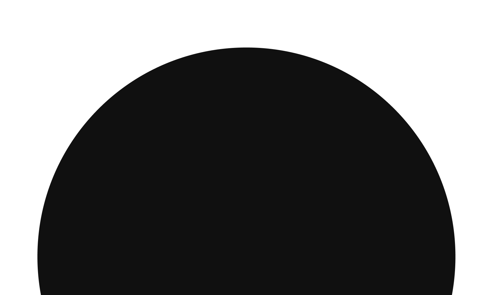

CHENG
ROSELINE
Étudiante en 1re année de DN MADE Graphisme aux Gobelins
Née en 2006, j’ai grandi dans un univers mêlant art, jeux vidéo et culture numérique. J’explore avec curiosité le design graphique, l’illustration et le motion design, en aimant expérimenter et croiser les techniques pour créer des projets sensibles et expressifs.